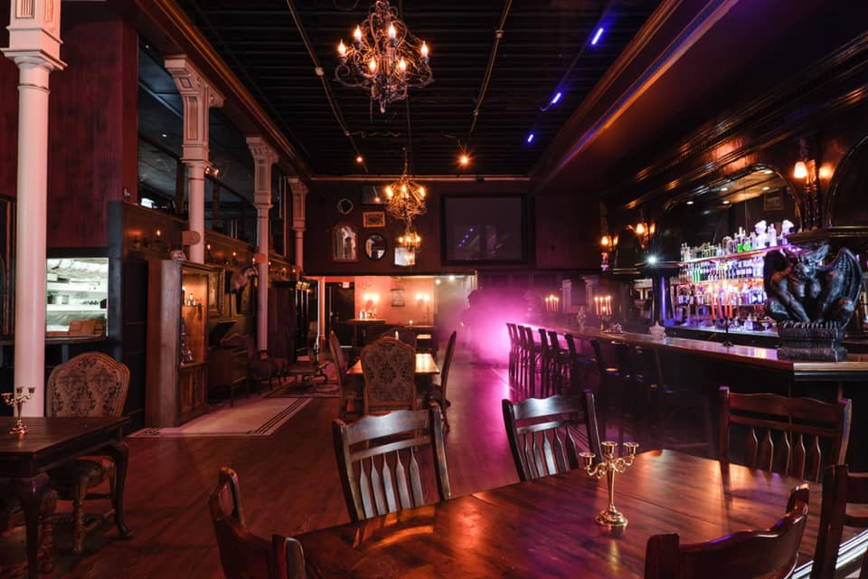

The historic town of St. Helens, 45 minutes from Portland, celebrates Halloween all October long with haunted tours, costume contests and moreEach year, St. Helens, the filming site of the otherwise forgettable Halloweentown, remembers its brush with the dollar DVD bin with The Spirit of Halloweentown, a fun, family-friendly celebration of the spookiest holiday around. Complete with costume contests, trick-or-treating through St. Helens' Old Town District, haunted town tours, and scarecrows galore, the celebration of the creepiest day of the year extends into every weekend in October, starting with the lighting of the Great Pumpkin in the city plaza.
Corn Maze at Topaz Farm
Check out the incredible ParaNorman kid maze, designed by local Laika Studios. All proceeds support the regenerative farming practices on the farm. Topaz farm also has a great pumpkin patch and has lot's to do for you and the kidsOver 130 acres on Sauvie Island, Topaz Farm is committed to no-spray, regenerative practices. Fresh local fruits and vegetables and delicious, seasonal farm foods such as house-made ice cream, grilled corn, hand pies, brats, and picnic boxes are available in the open-air farm market. The farm bar serves local craft beer, cider, and wines.
Raven’s Manor (21+)

The haunted manor themed bar with an interactive mixology experience like no other! Walk ins are welcomed. Come on in for a taste of our dangerously delicious drinks and light fare. Explore the many horrors of this haunted manor
Dr. Raven's Elixir Experience:
Take a look into Dr. Raven's experiment journal and recreate some of his ghastly (and tasty) concoctions. The phantoms of the manor will help guide you through two elixirs of your choosing. This experience also includes a drink from Dr. Raven's special trophy case; but you may have to work for it a little.
Oaks Park Scaregrounds
Portland Oregon’s ONLY Scream Park returns this fall to one of the oldest amusement parks in the country, the historic Oaks Amusement Park and roller rink The Event features three horrifying haunted walkthrough attractions, amusement rides, themed side attractions, mini golf, roller skating, concessions and so much more. Alcoholic beverages are available for adults 21+
Haunted Houses:
The Silver Scream (SLASH/back 80’s Style)
Grimthorne Manor (Survive the Night)
The Complex (Museum tour of nightmares)

Raven’s Manor (21+)
Dr. Raven's Elixir Experience:
Take a look into Dr. Raven's experiment journal and recreate some of his ghastly (and tasty) concoctions. The phantoms of the manor will help guide you through two elixirs of your choosing. This experience also includes a drink from Dr. Raven's special trophy case; but you may have to work for it a little.